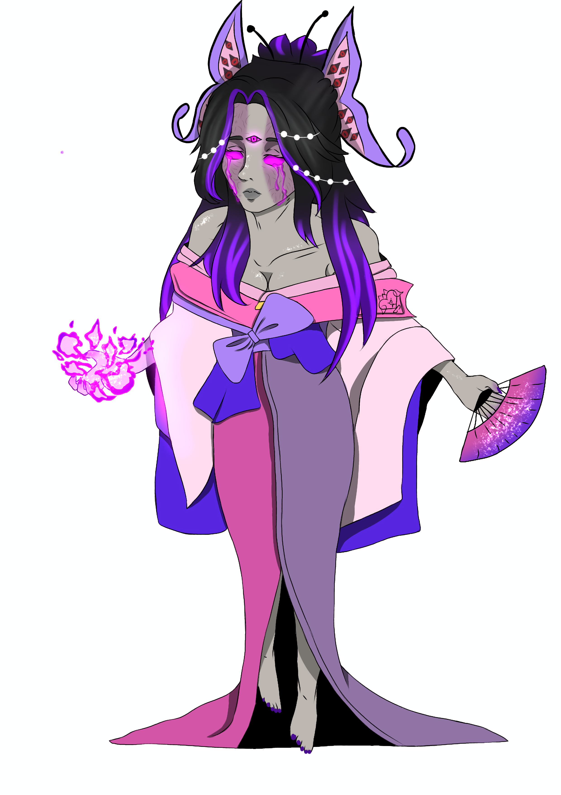

Meu Portifólio

Minha biblioteca:Uma Webpage personalizada
Token feito para uma RPG chamado Destino Imperfeito(DI),ela era um dos boss final,seu nome é Lia Castellazo e filha dos maiores vilões chama Diabo

Minha biblioteca:Uma Webpage personalizada
Personagem feito inspirado em Miraculos as aventuras de Ladybug,ele é um adolescente chamdo Katzumy Burgo

Minha biblioteca:Uma Webpage personalizada
Uma personagem criada inspirada no anime Tokyo Revengers,foi a primeira personagem que crie,seu nome é Kamura Kitagawa